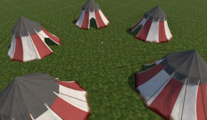
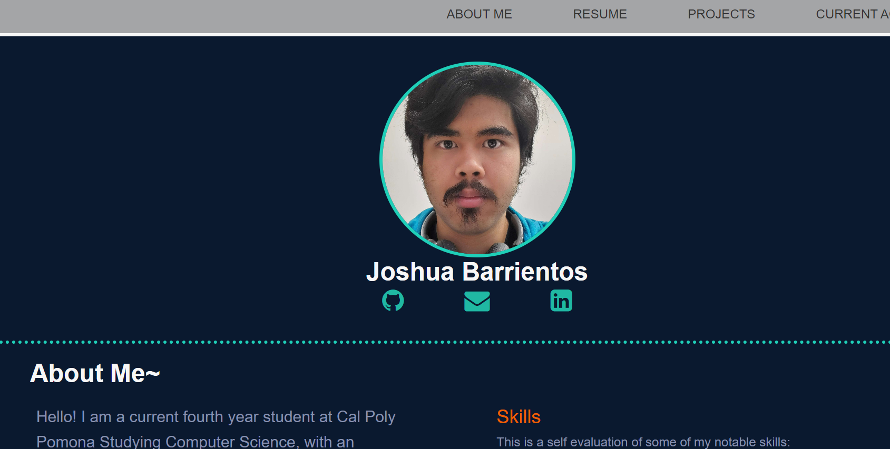

About Me~
Hello! I am a current fourth year student at Cal Poly Pomona Studying Computer Science, with an intended graduation date of May 2023. My primary interest is software development, especially in mobile and VR development. I am open to new career opportunites.
This is a self evaluation of some of my notable skills:
- Java
- Unity
- HTML/CSS
- C#
Resume/CV
Education
-
Bachelor's Degree
California State Polytechnic University, Pomona
-
August 2019 - present
Computer Science Major with a GPA of 3.65. On the Dean's list for three semesters.
-
Highschool Diploma
Walnut HighSchool
-
August 2015 - May 2019
Graduated Honors. Volunteered to help around the community with a club called Interact.
Previous Work
-
Busser
Gen Korean BBQ
-
October 2019 - April 2020
Helped clean tables and interact with customers. Assisted Servers and other coworkers when needed in their duties
Projects
VR minigames
Creation of a VR simulation of different minigames using the Unity engine. Helped with different minigames. Main contribution was
the balloon toss minigame, in which the player has a limited amount of time and they try to pop the moving ballons by throwing
balls towards them. Technologies used included git, Unity, Meta Quest 2, and Visual Studio Code.

Personal Website
A personal Website created using basic html and css, to showcase qualifications and skills off to future prospects. Tools
and technology used includes Visual Studio Code, git, and the browser Google Chrome.
